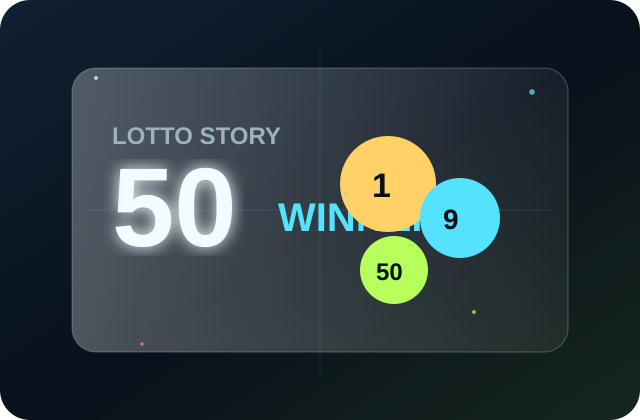
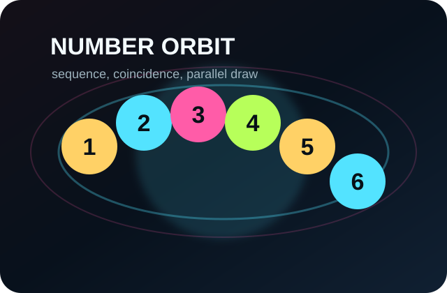
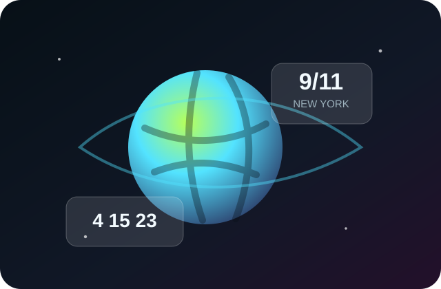

1019회 · 2022년 6월
역대 최다 당첨 50명
1등 당첨자가 무려 50명이나 나왔고, 그중 42명이 수동이었습니다. 로또번호 추천 업체에서 무작위로 뿌린 번호가 우연히 1등 번호가 되며 조작설까지 불붙었던 해프닝입니다.
기재부 해명에 따르면 가장 많이 팔린 번호 조합이 당첨됐을 경우 당첨자가 1만 6,000명에 달할 수도 있었다고 합니다.
Story Archive
오, 재미있는 이야기!
숫자가 만든 우연과 소동

1등 당첨자가 무려 50명이나 나왔고, 그중 42명이 수동이었습니다. 로또번호 추천 업체에서 무작위로 뿌린 번호가 우연히 1등 번호가 되며 조작설까지 불붙었던 해프닝입니다.
기재부 해명에 따르면 가장 많이 팔린 번호 조합이 당첨됐을 경우 당첨자가 1만 6,000명에 달할 수도 있었다고 합니다.

2004년 2월 추첨한 64회 당첨번호와 2015년 3월 추첨한 640회 당첨번호가 5개나 일치했습니다. 회차 번호도 64와 640이라 더 신기하게 회자됐습니다.
1019회차에서 1, 2, 3, 4, 5, 6 조합의 구매 건수가 11,232건이나 됐습니다. 만약 이 번호가 당첨됐다면 1인당 당첨금은 약 137만 원 수준이 될 뻔했습니다.

불가리아에서는 4, 15, 23, 24, 35, 42라는 6개 번호가 2주 연속 동일하게 나왔습니다. 조작 의혹으로 수사까지 이어졌지만 이상은 없었다고 알려졌습니다.
2002년 9월 11일 뉴욕주 로또 당첨번호에 추첨 날짜와 같은 9, 11이 등장했습니다. 9·11 테러 1주기 당일이라 큰 화제가 됐습니다.
743회와 바로 다음 주 744회의 번호 5개가 일치했습니다. 단 1주일 만에 비슷한 조합이 다시 등장해 많은 사람들을 놀라게 했습니다.